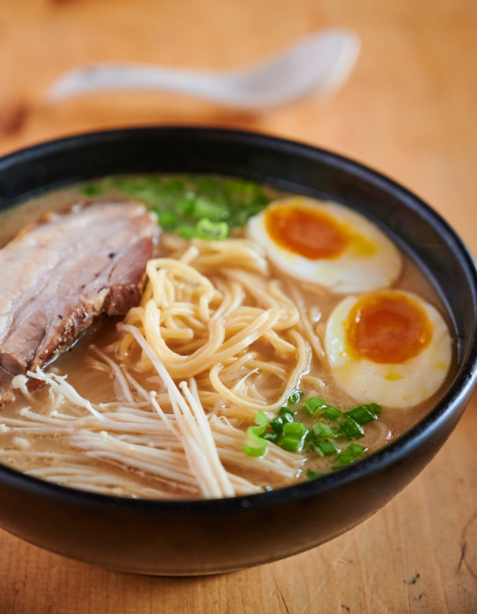

Making tonkotsu ramen at home is truly a labour of love. This isn’t some 15 minute miracle insta-ramen recipe. This isn’t even some one day recipe.
Making authentic tonkotsu ramen takes time. It takes effort. You have to be a bit crazy to go there. But it’s so good. It’s totally worth it.
Tonkostu Ramen
Choshu Pork
Miso Tare
Chashu pork belly
Miso Tare
Assembling the ramen